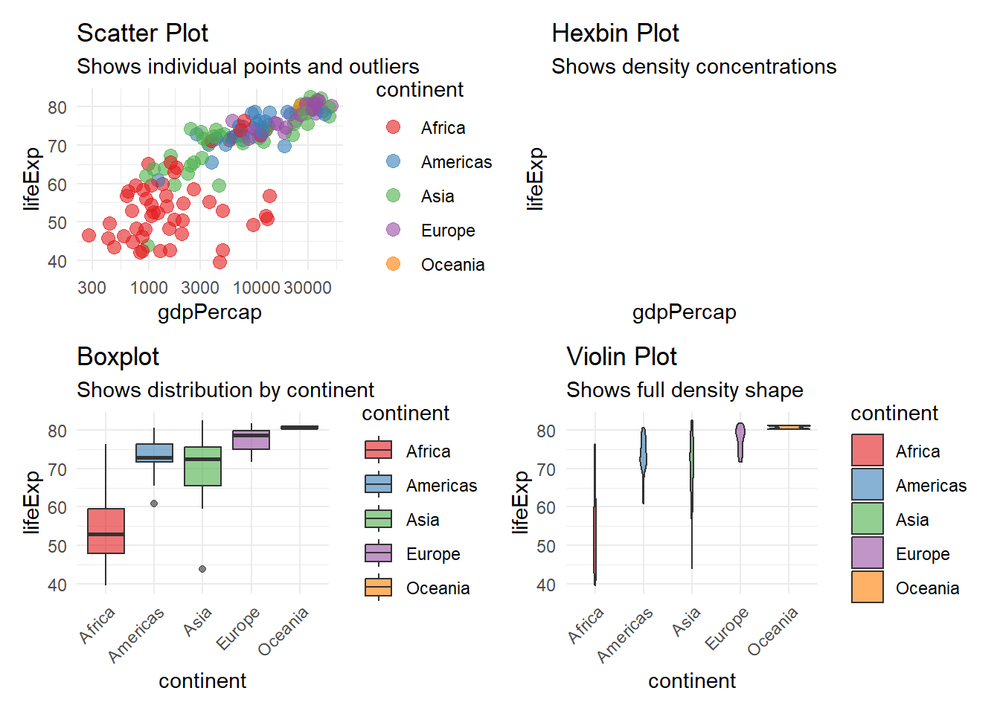

library(ggplot2)
library(gapminder)
library(patchwork)
library(dplyr)Task 3: Complex Graphics in Practice
Building Complex Visualisations
This task creates complex visualisations with multiple aesthetics and explores how encoding choices affect interpretation (Wickham 2016). Following the Grammar of Graphics framework (Wilkinson 2011), we demonstrate how independent specification of components creates effective communication.
Complex Graphic with Multiple Aesthetics
# Main complex visualisation
ggplot(gapminder %>% filter(year %in% c(1952, 1982, 2007)),
aes(x = gdpPercap, y = lifeExp, size = pop, fill = continent, colour = continent)) +
geom_point(shape = 21, alpha = 0.6, stroke = 1) +
geom_smooth(method = "loess", se = FALSE, alpha = 0.8) +
scale_x_log10(name = "GDP per capita (USD, log scale)",
breaks = c(1000, 5000, 10000, 50000),
labels = scales::dollar(c(1000, 5000, 10000, 50000))) +
scale_y_continuous(name = "Life Expectancy (years)",
breaks = seq(30, 85, 10)) +
scale_size_continuous(name = "Population",
range = c(2, 12),
breaks = c(10e6, 100e6, 500e6, 1e9),
labels = c("10M", "100M", "500M", "1B")) +
scale_fill_brewer(palette = "Set1", name = "Continent") +
scale_colour_brewer(palette = "Set1", name = "Continent", guide = "none") +
facet_wrap(~year) +
labs(title = "Global Development Across Three Decades",
subtitle = "Bubble size represents population; smooth curves show regional trends",
caption = "Source: Gapminder Foundation") +
theme_minimal() +
theme(legend.position = "bottom",
plot.title = element_text(face = "bold", size = 14))
Grammar Elements: - Data: gapminder filtered to three time points - Aesthetics: x (GDP), y (life expectancy), size (population), colour (continent), fill (continent) - Geometry: points with smooth curves - Scales: logarithmic x, linear y, continuous size, discrete colour - Coordinates: Cartesian - Facets: by year showing temporal progression - Guides: axes, legends, title, subtitle
Each component serves a purpose. The log scale reveals lower-income patterns. Size shows population magnitudes. Colour identifies continents. Faceting shows temporal change.
Variation 1: Cartesian vs Polar Coordinates
# Cartesian representation
p_cartesian <- ggplot(gapminder %>% filter(year == 2007),
aes(x = gdpPercap, y = lifeExp, colour = continent, size = pop)) +
geom_point(alpha = 0.6) +
geom_smooth(method = "loess", se = FALSE, alpha = 0.8) +
scale_x_log10() +
scale_colour_brewer(palette = "Set1") +
scale_size_continuous(range = c(2, 10)) +
labs(title = "Cartesian Coordinates",
x = "GDP per capita", y = "Life Expectancy") +
coord_cartesian() +
theme_minimal() +
theme(legend.position = "none")
# Polar representation
p_polar <- ggplot(gapminder %>% filter(year == 2007),
aes(x = continent, y = lifeExp, fill = continent)) +
geom_boxplot(alpha = 0.6) +
scale_fill_brewer(palette = "Set1") +
labs(title = "Polar Coordinates",
x = "", y = "Life Expectancy") +
coord_polar() +
theme_minimal() +
theme(legend.position = "none")
p_cartesian | p_polar
In Cartesian coordinates, the GDP-life expectancy relationship is clear. In polar coordinates, the emphasis shifts to distribution patterns within regions.
Variation 2: Different Geometries
# Same data, different geometries
data_2007 <- gapminder %>% filter(year == 2007)
p1 <- ggplot(data_2007, aes(x = gdpPercap, y = lifeExp, colour = continent)) +
geom_point(size = 3, alpha = 0.6) +
scale_x_log10() +
scale_colour_brewer(palette = "Set1") +
labs(title = "Scatter Plot",
subtitle = "Shows individual points and outliers") +
theme_minimal()
p2 <- ggplot(data_2007, aes(x = gdpPercap, y = lifeExp)) +
geom_hex(bins = 10) +
scale_x_log10() +
labs(title = "Hexbin Plot",
subtitle = "Shows density concentrations") +
theme_minimal()
p3 <- ggplot(data_2007, aes(x = continent, y = lifeExp, fill = continent)) +
geom_boxplot(alpha = 0.6) +
scale_fill_brewer(palette = "Set1") +
labs(title = "Boxplot",
subtitle = "Shows distribution by continent") +
theme_minimal() +
theme(axis.text.x = element_text(angle = 45, hjust = 1))
p4 <- ggplot(data_2007, aes(x = continent, y = lifeExp, fill = continent)) +
geom_violin(alpha = 0.6) +
scale_fill_brewer(palette = "Set1") +
labs(title = "Violin Plot",
subtitle = "Shows full density shape") +
theme_minimal() +
theme(axis.text.x = element_text(angle = 45, hjust = 1))
(p1 | p2) / (p3 | p4)
Each geometry reveals different aspects: - Scatter: individual points and outliers clearly visible - Hexbin: density patterns and clustering - Boxplot: quartiles and median summaries - Violin: complete density distributions
Variation 3: Contour Plot
# Contour density representation
ggplot(gapminder %>% filter(year == 2007),
aes(x = gdpPercap, y = lifeExp)) +
geom_point(aes(colour = continent), alpha = 0.5, size = 2) +
geom_density2d(colour = "grey30", alpha = 0.7, linewidth = 0.5) +
scale_x_log10(name = "GDP per capita (USD, log scale)") +
scale_y_continuous(name = "Life Expectancy (years)") +
scale_colour_brewer(palette = "Set1", name = "Continent") +
labs(title = "Contour Density Plot",
subtitle = "Shows concentration regions and relationship shape") +
theme_minimal()
Contours reveal where data concentrates most densely and show the overall relationship pattern.
Visual Perception Analysis
The same data visualised through different encodings produces different perceptions:
Scatter plots emphasise individual observations, making outliers obvious. Viewers notice unusual points immediately. The relationship appears as scattered pattern rather than tight association.
Hexbin plots shift focus to density, removing outlier emphasis. Viewers see where most data concentrates. Rare combinations become invisible.
Distribution plots (boxplot, violin) show how life expectancy varies within continents, revealing that African nations have lower median and greater spread.
Contour plots show overall relationship shape without individual point identity.
These differences demonstrate that encoding choice is not neutral. Different visualisations tell different stories from the same data. Choosing appropriate encoding requires understanding both data structure and analytical question.
Key Principles Applied
- Multiple aesthetics serve multiple dimensions: position for primary comparison, size for secondary dimension, colour for categorical grouping
- Smooth curves reveal patterns while points show raw data
- Faceting enables comparison across categorical groups without overwhelming single plot
- Scale choices reflect data structure: log scale for skewed data, linear for symmetric data
- Guides are essential: axis labels, legends, titles communicate meaning
- Colour palettes should be colourblind-friendly: Set1 palette works for most viewers
- Transparency manages overplotting: alpha = 0.6 shows density through overlapping points
These principles combine through the Grammar of Graphics framework to create visualisations that communicate data patterns effectively and ethically (Wilkinson 2011; Wilke 2019).
References
Wickham, Hadley, 2016, ggplot2: Elegant graphics for data analysis, 2nd ed., Cham, Switzerland Springer.
Wilke, Claus O., 2019, Fundamentals of data visualization: A primer on making informative and compelling figures, Sebastopol, CA OReilly.
Wilkinson, Leland, 2011, The grammar of graphics, New York Springer.